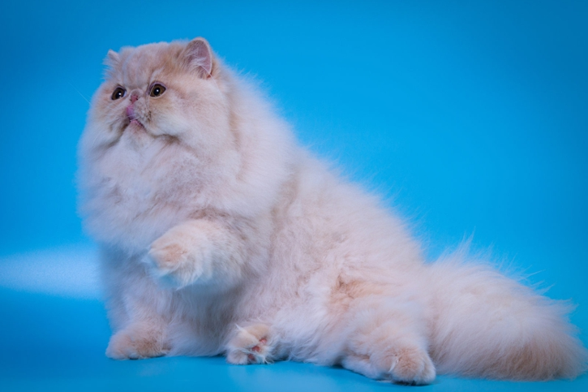

 Ввиду целого ряда особенностей персидской длинношерстной кошки, её стандарты довольно объёмны, они давно и притом очень подробно расписаны в различных профессиональной литературе и на специализированных сайтах в Интернете, а потому мы здесь остановимся лишь на некоторых наиболее ярких и очевидных отличиях этой необыкновенной и очень популярной в наши дни кошки с широким «лицом» пикинеса от других домашних пород, если угодно, напишем портрет персидской кошки на скорую руку — беглыми, широкими мазками.
Перво-наперво специалистами отмечается массивная круглая голова с широким черепом на короткой сильной шее, а также приземистость нынешних персидских кошек, их массивная грудь, мускулистые плечи, широкая спина. Хвост короткий, но вполне пропорциональный телу, очень пушистый. А ещё у персов короткие, сильные и мощные, мускулистые конечности, а между пальцев таких же мощных лап хорошо заметны пучки шерсти. Глаза крупные, круглые, яркого и насыщенного цвета, они прекрасно гармонируют с окрасом шерсти, могут быть оранжевыми, медными, зелёными у шиншилл, серебристых и золотых окрасов кошек или голубыми у колор-пойнтов; поговаривают также, что у некоторых особей с белой шерсткой отмечается гетерохромия. Очевидный минус — из-за особенностей строения морды, глаза персидских кошек часто текут, а потому требуют особого ухода.
И уж конечно великолепная шерсть персов — здесь, пожалуй, им вообще нет равных. Они вне всякой конкуренции. Очень густая, шелковистая и очень-очень мягкая, длинная, с густым подшёрстком. Стандартами породы допускаются все цвета окраса, однако, наиболее распространены и чаще всего встречаются следующие: солид (одноцветные) и дымные, окрасы с белым (биколоры), шиншиллы, серебристые и золотые, колорпойнты (колор-пойты), а также те самые же окрасы с рисунком — полосатые и мраморные.